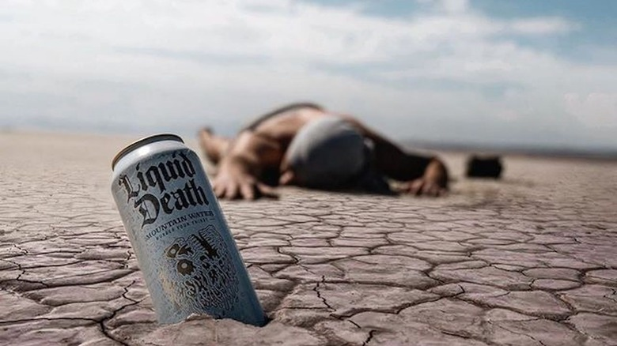

Jsme jen zábavná nápojářská společnost, která nesnáší firemní marketing stejně jako vy. Naším ďábelským posláním je rozesmát lidi a přimět je, aby častěji pili zdravější nápoje, a přitom pomáhat likvidovat znečištění plastem. Ale dost o nás a našem nudném marketingovém příběhu, řekněte nám něco o sobě:
Liquid Death není typickým nápojem, je to odvážná a rebelská značka, která vzala útokem odvětví vody v plechovkách. Díky svému jménu, které upoutá pozornost, a obalu, který vyniká, je Liquid Death na cestě k tomu, aby se hydratace stala cool. Na první pohled by vás elegantní vysoké plechovky zdobené logem lebky mohly přivést k domněnce, že držíte v ruce energetický nápoj nebo třeba řemeslné pivo. Při bližším pohledu však zjistíte, že uvnitř je čistá horská pramenitá voda. Netradiční značka je záměrným krokem, který má zpochybnit normy na trhu s balenou vodou a povzbudit spotřebitele, aby přehodnotili svůj výběr a zvolili udržitelnější variantu. Jedním z hlavních cílů společnosti Liquid Death je řešit dopad plastové balené vody na životní prostředí. Hliníkové plechovky jsou nejen 100% recyklovatelné, ale také přispívají ke snížení uhlíkové stopy ve srovnání s tradičními plastovými lahvemi. Značka je hrdá na to, že propaguje ekologickou alternativu, aniž by dělala kompromisy ve stylu nebo obsahu. Kromě závazku k udržitelnosti se Liquid Death hlásí také k rebelskému postoji inspirovanému punkem. Její marketingové kampaně se často hravě vysmívají přehnané a extrémní povaze některých propagačních akcí energetických nápojů a vnášejí tak smysl pro humor do tradičně vážného světa hydratace. Komunita Liquid Death, známá jako "Death Squad", si osvojila ostrý a neuctivý charakter značky. Sociální média jsou plná fanoušků, kteří sdílejí své zážitky a hrdě se hlásí ke svým zkušenostem.
"Liquid Death je neuvěřitelně osvěžující! Je to jako voda z horského pramene, kterou můžete nosit v kapsičce. Od té doby, co piji Liquid Death, cítím se hydratovaněji a plný energie. Navíc je design plechovky skvělý. Určitě je to teď můj oblíbený nápoj!"
"Liquid Death je prostě kovový! Jako vášnivá fanynka rocku mi tento nápoj mluví přímo k duši. Je to jako pití čistého adrenalinu a chuť je stejně epická jako design plechovky. Budu si Liquid Death nosit na všechny moje budoucí koncerty!"
"Zpočátku jsem byl skeptický, ale Liquid Death je hra o život! Nejenže mě udržuje hydratovaného po celý den, ale také mi pomáhá potlačit touhu po sodovce. Je to bezvýhradné hydratace v badass balení. Jsem závislý!"
"Liquid Death je revoluce v hydrataci, na kterou jsme čekali! Zbavte se nudné láhve s vodou a přivítejte zážitek, který je stejně osvěžující, jako je badass. Ať už jsem v posilovně nebo odpočívám doma, Liquid Death je vždycky se mnou. Zůstaňte hydratovaní, zůstaňte metal!"
"Liquid Death je ten nejlepší rozhovorový zahájení. Nemohu vám říct, kolikrát mě lidé zastavili, abych se jich zeptala na cool design plechovky. A jakmile to zkusili, byli závislí! To není jen nápoj; je to životní styl. Liquid Death navždy!"
Pokud máte zrakové postižení a máte potíže s naším webovým místem, zavolejte nám na číslo v USA. Pro veškeré další dotazy nás kontaktujte emailem.